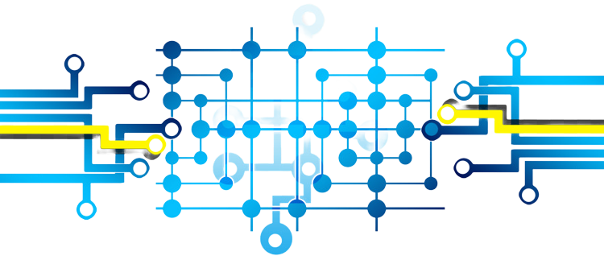

|

|

|
- About
: The Master MAFI
(for Mathematics,
Algorithmics, Finance and
Informatics) aims
to train students in Mathematics
(structures and applications) and Computer
Science (theory and applications).
The courses, exercises, projects and
practical works will help avoid two
pitfalls, excessive and non-comprehensive
practice of computer science and/or
excessive passion for theory without
seeing the applications such as those
related to Machine Learning and
Blockchain Technologies.
The teaching will be provided by a panel
of international academics (including AIMS
alumni and others namely from the University
of Antananarivo, IST
Antsiranana, University
of Paris Cité, Stellenbosh
University, University
of Cape Town via Algorand Project,
Technion
Israel Institute of Technology
,
École
Polytechnique Fédérale de Lausanne,
Università
Roma Tre and Umeå
University) experts in their fields
and willing to give a hand especially with
Maths, Comp. Sci. and the latest
technologies (always emphasizing their
theoretical and practical aspects).
-
Disclaimer
: this does not commit in any way
the home institutions of the academics who
have kindly accepted to give courses. Some
participants from the institutions
mentioned above have benefited from
support provided by the
International
Mathematical Union (IMU)
and the
Centre
International de Mathématiques Pures et
Appliquées (CIMPA)
.
|